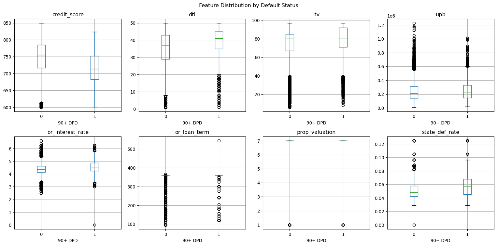
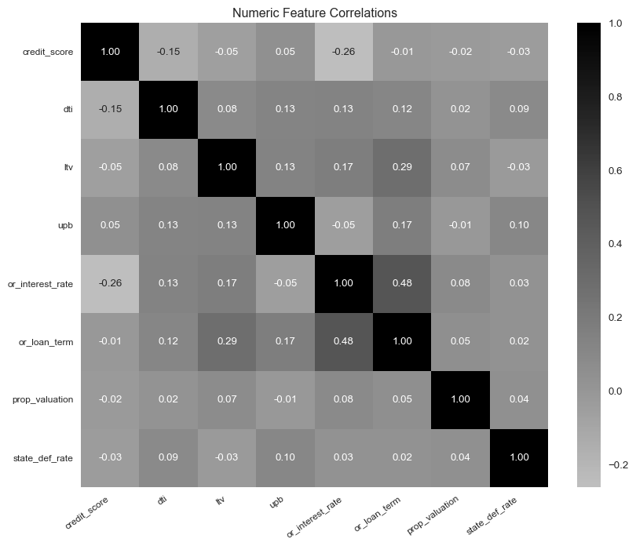
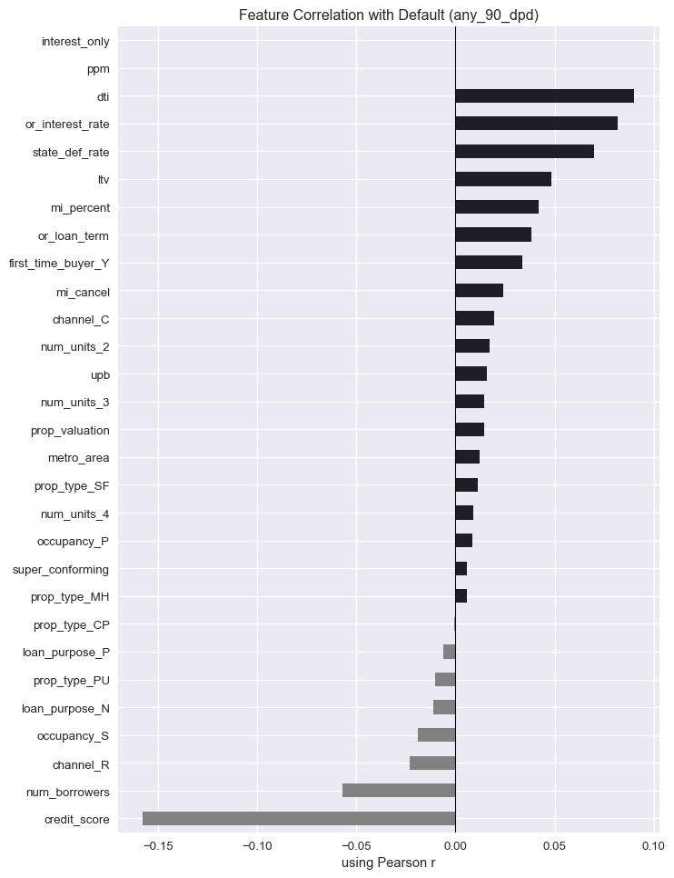

| column_name | type | max_length | |
|---|---|---|---|
| 0 | Credit Score | Numeric | 4 |
| 1 | First Payment Date | Date | 6 |
| 2 | First Time Homebuyer Flag | Alpha | 1 |
| 3 | Maturity Date | Date | 6 |
| 4 | Metropolitan Statistical Area (MSA) Or Metropo... | Numeric | 5 |
| 5 | Mortgage Insurance Percentage (MI %) | Numeric | 3 |
| 6 | Number of Units | Numeric | 2 |
| 7 | Occupancy Status | Alpha | 1 |
| 8 | Original Combined Loan-to-Value (CLTV) | Numeric | 3 |
| 9 | Original Debt-to-Income (DTI) Ratio | Numeric | 3 |
| 10 | Original UPB | Numeric | 12 |
| 11 | Original Loan-to-Value (LTV) | Numeric | 3 |
| 12 | Original Interest Rate | Numeric - 6,3 | 6 |
| 13 | Channel | Alpha | 1 |
| 14 | Prepayment Penalty Mortgage (PPM) Flag | Alpha | 1 |
| 15 | Amortization Type (Formerly Product Type) | Alpha | 5 |
| 16 | Property State | Alpha | 2 |
| 17 | Property Type | Alpha | 2 |
| 18 | Postal Code | Numeric | 5 |
| 19 | Loan Sequence Number | Alpha Numeric - PYYQnXXXXXXX | 12 |
| 20 | Loan Purpose | Alpha | 1 |
| 21 | Original Loan Term | Numeric | 3 |
| 22 | Number of Borrowers | Numeric | 2 |
| 23 | Seller Name | Alpha Numeric | 60 |
| 24 | Servicer Name | Alpha Numeric | 60 |
| 25 | Super Conforming Flag | Alpha | 1 |
| 26 | Pre-HARP Loan Sequence Number | Alpha Numeric - PYYQnXXXXXXX | 12 |
| 27 | Program Indicator | Alpha Numeric | 1 |
| 28 | HARP Indicator | Alpha | 1 |
| 29 | Property Valuation Method | Numeric | 1 |
| 30 | Interest Only (I/O) Indicator | Alpha | 1 |
| 31 | Mortgage Insurance Cancellation Indicator | Alpha | 1 |
About Freddie Mac
The data originates from Freddy Mac a group created by congress in an effort to make mortgages more accessible to Americans. This accessibility is derived from Freddie Mac’s mortgage purchases. Lenders sell the mortgage loans to Freddie Mac who in turn uses the assets as securities sold to investors. Securities give one the right to something else– a financial contract. In this case mortgages, as securities, give investors a monthly stream of income for decades.
As a main purchaser of mortgages, Freddie Mac has a large amount of mortgage data across the entire US. These datapoints are ideal for the Home Loan Adviser model.
About the Raw Data
The data is provided by Freddie Mac in zip files by year. The download is available here. A guide is also provided here.
Each year of the SFLL data is composed of quarters, which are provided in zip files as well. Each quarter then contains two files, one contains loan origination data and the other contains the performances of each loan. Their “key” is a column named loan_sequence_number to be used for joining if needed.
#| eval: false
#--to extract automatically (on mac)--
cd ~/Downloads
unzip "historical_data_*.zip"
#-- remove the main zip from folder and re-run to extract quarters--
unzip "historical_data_*.zip"Once the nested zip files were extracted, there were a total of 40 files. The raw data is in .txt format separated by | vertical bars, or “pipes” instead of commas or tabs. There are no headers so all columns were named upon importing.

Data Dictionary
| column_name | type | max_length | |
|---|---|---|---|
| 0 | Loan Sequence Number | Alpha Numeric - PYYQnXXXXXXX | 12 |
| 1 | Monthly Reporting Period | Date | 6 |
| 2 | Current Actual UPB | Numeric - 12,2 | 12 |
| 3 | Current Loan Delinquency Status | Alpha Numeric | 3 |
| 4 | Loan Age | Numeric | 3 |
| 5 | Remaining Months to Legal Maturity | Numeric | 3 |
| 6 | Defect Settlement Date | Date | 6 |
| 7 | Modification Flag | Alpha | 1 |
| 8 | Zero Balance Code | Numeric | 2 |
| 9 | Zero Balance Effective Date | Date | 6 |
| 10 | Current Interest Rate | Numeric - 8,3 | 8 |
| 11 | Current Deferred UPB | Numeric | 12 |
| 12 | Due Date of Last Paid Installment (DDLPI) | Date | 6 |
| 13 | MI Recoveries | Numeric - 12,2 | 12 |
| 14 | Net Sales Proceeds | Alpha-Numeric | 14 |
| 15 | Non MI Recoveries | Numeric - 12,2 | 12 |
| 16 | Expenses | Numeric - 12,2 | 12 |
| 17 | Legal Costs | Numeric - 12,2 | 12 |
| 18 | Maintenance and Preservation Costs | Numeric - 12,2 | 12 |
| 19 | Taxes and Insurance | Numeric - 12,2 | 12 |
| 20 | Miscellaneous Expenses | Numeric - 12,2 | 12 |
| 21 | Actual Loss Calculation | Numeric - 12,2 | 12 |
| 22 | Modification Cost | Numeric - 12,2 | 12 |
| 23 | Step Modification Flag | Alpha | 1 |
| 24 | Deferred Payment Plan | Alpha | 1 |
| 25 | Estimated Loan-to-Value (ELTV) | Numeric | 4 |
| 26 | Zero Balance Removal UPB | Numeric - 12,2 | 12 |
| 27 | Delinquent Accrued Interest | Numeric - 12,2 | 12 |
| 28 | Delinquency Due to Disaster | Alpha | 1 |
| 29 | Borrower Assistance Status Code | Alpha | 1 |
| 30 | Current Month Modification Cost | Numeric - 12,2 | 12 |
| 31 | Interest Bearing UPB | Numeric - 12,2 | 12 |
The Entire Data Process
The next section follows the step by step evaluation, cleaning, and encoding of the Freddie Mac Data.
Data Load & Clean- Origination
#-- data load-- (including NA values mentioned in dictionary)--
or_2018= pd.read_csv("data/historical_data_2018Q1.txt", sep="|", header= None, na_values= ["", "9999", "999", "9", " ", "X"])
#-- column names--
or_2018.columns= ["credit_score", "first_payment_date", "first_time_buyer", "maturity_date", "msa", "mi_percent", "num_units", "occupancy", "cltv", "dti", "upb", "ltv", "or_interest_rate", "channel", "ppm", "amortization", "prop_state", "prop_type", "zipcode", "loan_id", "loan_purpose", "or_loan_term", "num_borrowers", "seller", "servicer", "super_conforming", "pre_harp_loan_id", "program_indicator", "harp_indicator", "prop_valuation", "interest_only", "mi_cancel"]
#-- date format--
or_2018["first_payment_date"]= pd.to_datetime(or_2018["first_payment_date"], format="%Y%m", errors="coerce").dt.strftime("%Y-%m")
or_2018["maturity_date"]= pd.to_datetime(or_2018["maturity_date"], format="%Y%m", errors="coerce").dt.strftime("%Y-%m")For our application we will drop several variables.The HARP program helped borrowers refinance their home when their home’s value was less than their mortgage. 1 The data points that identify with HARP will also be dropped because the data points represent a borrower that would not typically meet Freddie Mac’s qualifications. Zipcode will be dropped because its high cardinality is not worth keeping, we can use msa later for a metro or rural flag. CLTV will be dropped because only 1% differs from LTV. We’ll keep Load ID as a join key.
#-- removing HARP--
or_2018= or_2018[or_2018["harp_indicator"].isna()].copy()
#-- dropping irrelevant variables--
drop=["pre_harp_loan_id","amortization", "harp_indicator", "program_indicator", "seller", "servicer", "first_payment_date", "maturity_date", "zipcode", "cltv"]
or_2018= or_2018.drop(columns=drop)#-- using loan_id as index--
or_2018= or_2018.set_index("loan_id")Encoding
The data dictionary provided by Freddie Mac specifies what the missing values are. The msa variable for example, has missing values that may mean a property is not in a metropolitan area, or may actually mean “unknown”. Zip code data appears in every entry so imputation is possible using overlap. But a more simple and reliable approach is to code a new variable using msa column as binary; metro area or not.
#-- msa to metro area binary--
or_2018["metro_area"]= or_2018["msa"].notna().astype(int)
or_2018= or_2018.drop(columns="msa")
#--super conforming to binary--
or_2018["super_conforming"]= or_2018["super_conforming"].fillna(0)
or_2018["super_conforming"]= (or_2018["super_conforming"] == "Y").astype(int)There are columns with low carnality that can’t be coded as binary but are better served in one hot encoding.
categorical_cols=["first_time_buyer","loan_purpose","prop_type","occupancy","channel", "num_units"]
or_2018= pd.get_dummies(or_2018, columns=categorical_cols, drop_first=True, dtype=int)#--numeric imputation--
numeric_impute= ["credit_score", "dti", "ltv", "mi_percent", "prop_valuation", "upb"]
for col in numeric_impute:
or_2018[col]= or_2018[col].fillna(or_2018[col].median())
#--imputation--
for col in ["interest_only", "ppm", "mi_cancel"]:
or_2018[col]= (or_2018[col] == "Y").astype(int)Data Clean Final Check
or_2018.isnull().sum()credit_score 0
mi_percent 0
dti 0
upb 0
ltv 0
or_interest_rate 0
ppm 0
prop_state 0
or_loan_term 0
num_borrowers 0
super_conforming 0
prop_valuation 0
interest_only 0
mi_cancel 0
metro_area 0
first_time_buyer_Y 0
loan_purpose_N 0
loan_purpose_P 0
prop_type_CP 0
prop_type_MH 0
prop_type_PU 0
prop_type_SF 0
occupancy_P 0
occupancy_S 0
channel_C 0
channel_R 0
num_units_2 0
num_units_3 0
num_units_4 0
dtype: int64The data is clean and ready for analysis. We’ll create a function to apply the cleaning to all the origination datasets coming from Freddie Macs standard files.
Data Load & Clean- Performance
perf_2018= pd.read_csv("data/historical_data_time_2018Q1.txt", sep="|", header= None, na_values= ["", "9999", "999", "9", " ", "X"])perf_2018.columns= ["loan_id", "report_period", "current_upb", "delinquency_status", "loan_age", "remaining_months", "defect_settlement_date", "modification_flag", "zero_balance_code", "zero_balance_effective_date", "current_rate", "current_deferred_upb", "ddlpi", "mi_recoveries", "net_sales_proceeds", "non_mi_recoveries", "expenses", "legal_costs", "maintenance_costs", "taxes_insurance", "misc_expenses", "actual_loss", "modification_cost", "step_modification_flag", "deferred_payment_plan", "eltv", "zero_balance_removal_upb", "delinquent_accrued_interest", "disaster_delinquency", "borrower_assistance", "current_month_mod_cost", "interest_bearing_upb"]keeping= ["loan_id", "report_period", "current_upb", "delinquency_status", "loan_age", "remaining_months", "zero_balance_code", "current_rate", "modification_flag", "disaster_delinquency", "borrower_assistance"]
perf_2018= perf_2018[keeping]
perf_2018= perf_2018.set_index("loan_id")Encoding
We’ll use the industry standard >90 days delinquent.
perf_2018["delinquency_status"]= pd.to_numeric(perf_2018["delinquency_status"], errors="coerce")
target= (perf_2018.groupby("loan_id")["delinquency_status"].max().ge(3).astype(int).reset_index().rename(columns={"delinquency_status": "any_90_dpd"}))zero_balance_code will be useful because it tells why a loan was closed/terminated. We’ll encode and join to the main dataframe.
zero_bal= (perf_2018.groupby("loan_id")["zero_balance_code"].max().reset_index().rename(columns={"zero_balance_code": "termin_code"}))
#--joining--
target= target.merge(zero_bal, on="loan_id", how="left")
#-- filling never delinquent with 0--
target["termin_code"]= target["termin_code"].fillna(0)
#--final join--
final_2018= or_2018.merge(target, on="loan_id", how="inner")
final_2018= final_2018.set_index("loan_id")
#-- mapping state and def rate--
state_def_rate= final_2018.groupby("prop_state")["any_90_dpd"].mean()
final_2018["state_def_rate"]= final_2018["prop_state"].map(state_def_rate)
final_2018= final_2018.drop(columns=["prop_state", "termin_code"])
#--for later use in app--
state_def_rate.to_csv("homeloan_flask/model_assets/state_def_rate.csv", header=True)Keeping Key Variables Using Data Visualizations
Numerical Variables:
Default vs Non Default Distributions
The boxplots below show if the distribution of each feature differs in default and non-defaulted loans:
numerics= ["credit_score", "dti", "ltv", "upb", "or_interest_rate", "or_loan_term", "prop_valuation", "state_def_rate"]
fig, axes= plt.subplots(2, 4, figsize=(16, 8))
for ax, col in zip(axes.flatten(), numerics):
final_2018.boxplot(column=col, by="any_90_dpd", ax=ax)
ax.set_title(col)
ax.set_xlabel(">=90 days past due")
plt.suptitle("Feature Distribution by Default Status")
plt.style.use('seaborn-v0_8')
plt.show()
plt.close()
Correlation Heatmaps and Colinearity
The correlation heatmap below shows pearson correlations between the numeric variables in the data. Excluding the obvious diagonal, no variable relationship is over than the 0.7 threshold of multicollinearity (no higher than 0.5 in the heatmap).
fig, ax= plt.subplots(figsize=(10, 8))
corr= final_2018[numerics].corr()
sns.heatmap(corr, annot=True, fmt=".2f", cmap="Grays", center=0, ax=ax)
ax.set_xticklabels(ax.get_xticklabels(), rotation=35, ha="right", fontsize=9)
ax.set_yticklabels(ax.get_yticklabels(), rotation=0, fontsize=9)
plt.title("Numeric Feature Correlations")
plt.style.use('seaborn-v0_8')
plt.show()
plt.close()
Categorical Variables:
The Bar chart below shows which categorical variables are associated with increased default rates:
binary_cols= ["metro_area", "super_conforming", "interest_only", "ppm", "mi_cancel",
"first_time_buyer_Y", "loan_purpose_N", "loan_purpose_P"]
default_rates= final_2018[binary_cols].apply(
lambda col: final_2018.groupby(col)["any_90_dpd"].mean()).T
default_rates.columns= ["No (0)", "Yes (1)"]
default_rates.plot(kind="barh", figsize=(10, 6), color=["#828182", "#1C1F23"])
plt.title("Default Rate by Binary Feature")
plt.xlabel("Default Rate")
plt.axvline(final_2018["any_90_dpd"].mean(), color="red", linestyle="--", label="Overall avg")
plt.legend()
plt.style.use('seaborn-v0_8')
plt.show()
plt.close()
Defaulting Correlations
corr_target= final_2018.corr()["any_90_dpd"].drop("any_90_dpd").sort_values()
fig, ax= plt.subplots(figsize=(8, 12))
corr_target.plot(kind="barh", ax=ax, color=["#828182" if v < 0 else "#1C1F23" for v in corr_target])
ax.axvline(0, color="black", linewidth=0.8)
ax.set_title("Feature Correlation with Default (any_90_dpd)")
ax.set_xlabel("using Pearson r")
plt.style.use('seaborn-v0_8')
plt.show()
plt.close()
prop_valuation, or_loan_term, interest_only, ppm, and upd have been shown to be weak features so they will not be included in our model
weak= ["prop_valuation", "or_loan_term", "interest_only", "ppm", "upb", "loan_purpose_N", "loan_purpose_P", "mi_percent"]
final_2018= final_2018.drop(columns=weak)
final_2018.to_csv("data/final_2018.csv", index=True)Origination Data Cleaning Function:
def clean_origination(filepath):
or_df= pd.read_csv(filepath, sep="|", header=None, na_values=["", "9999", "999", "9", " ", "X"])
or_df.columns= ["credit_score", "first_payment_date", "first_time_buyer", "maturity_date", "msa", "mi_percent", "num_units", "occupancy", "cltv", "dti", "upb", "ltv", "or_interest_rate", "channel", "ppm", "amortization", "prop_state", "prop_type", "zipcode", "loan_id", "loan_purpose", "or_loan_term", "num_borrowers", "seller", "servicer", "super_conforming", "pre_harp_loan_id", "program_indicator", "harp_indicator", "prop_valuation", "interest_only", "mi_cancel"]
or_df= or_df[or_df["harp_indicator"].isna()].copy()
drop= ["pre_harp_loan_id", "amortization", "harp_indicator", "program_indicator", "seller", "servicer", "first_payment_date", "maturity_date", "zipcode", "cltv"]
or_df= or_df.drop(columns=drop)
or_df= or_df.set_index("loan_id")
or_df["metro_area"]= or_df["msa"].notna().astype(int)
or_df= or_df.drop(columns="msa")
or_df["super_conforming"]= or_df["super_conforming"].fillna(0)
or_df["super_conforming"]= (or_df["super_conforming"] == "Y").astype(int)
categorical_cols= ["first_time_buyer", "loan_purpose", "prop_type", "occupancy", "channel", "num_units"]
or_df= pd.get_dummies(or_df, columns=categorical_cols, drop_first=True, dtype=int)
for col in ["credit_score", "dti", "ltv", "mi_percent", "prop_valuation", "upb"]:
or_df[col]= or_df[col].fillna(or_df[col].median())
for col in ["interest_only", "mi_cancel", "ppm"]:
or_df[col]= (or_df[col] == "Y").astype(int)
return or_dfPerformance Data Cleaning Function:
def clean_performance(filepath):
perf_df= pd.read_csv(filepath, sep="|", header=None, na_values=["", "9999", "999", "9", " ", "X"])
perf_df.columns= ["loan_id", "report_period", "current_upb", "delinquency_status", "loan_age", "remaining_months", "defect_settlement_date", "modification_flag", "zero_balance_code", "zero_balance_effective_date", "current_rate", "current_deferred_upb", "ddlpi", "mi_recoveries", "net_sales_proceeds", "non_mi_recoveries", "expenses", "legal_costs", "maintenance_costs", "taxes_insurance", "misc_expenses", "actual_loss", "modification_cost", "step_modification_flag", "deferred_payment_plan", "eltv", "zero_balance_removal_upb", "delinquent_accrued_interest", "disaster_delinquency", "borrower_assistance", "current_month_mod_cost", "interest_bearing_upb"]
keeping= ["loan_id", "report_period", "current_upb", "delinquency_status", "loan_age", "remaining_months", "zero_balance_code", "current_rate", "modification_flag", "disaster_delinquency", "borrower_assistance"]
perf_df= perf_df[keeping].set_index("loan_id")
perf_df["delinquency_status"]= pd.to_numeric(perf_df["delinquency_status"], errors="coerce")
return perf_df(create autoated pipeline for merging origination and performance datasets. final clean output to be fed to model for use by flask app)